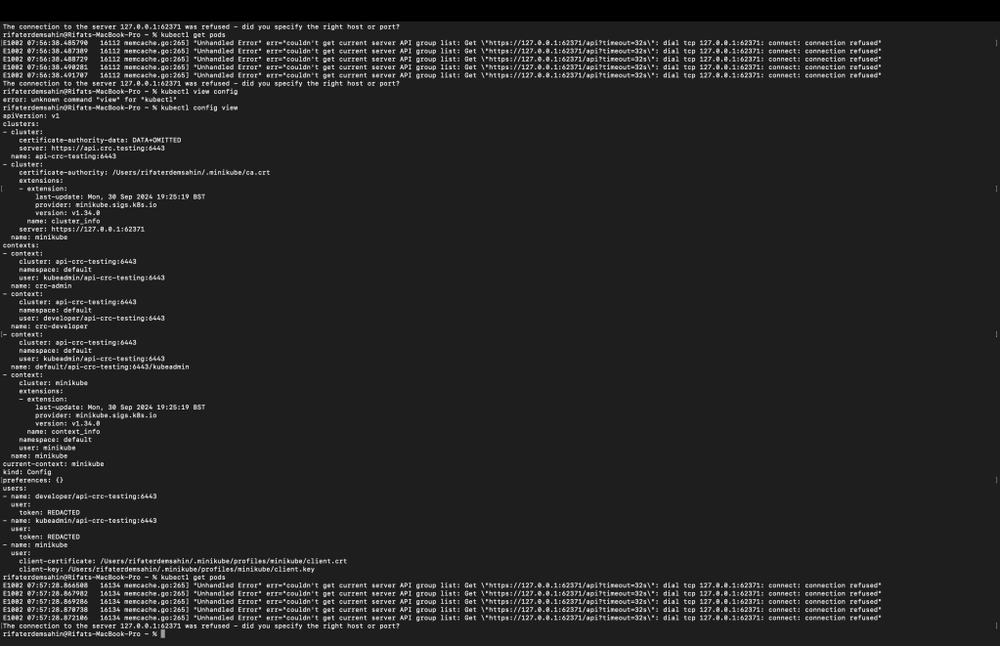

🛠️ How to Manage Multiple Kubernetes Contexts and Switch Between Them

Are you having trouble managing multiple contexts in your Kubernetes configuration and switching between them? If so, you’re not alone. In this post, I’ll walk you through how to manage and switch between multiple contexts efficiently in your Kubernetes setup. We'll also troubleshoot some common issues you might encounter during the process.
🚀 Let’s dive in!
🔍 What Are Kubernetes Contexts?
Kubernetes contexts allow you to quickly switch between different clusters, namespaces, and user credentials. If you’re working on multiple Kubernetes clusters (like Minikube and CRC), it’s important to know how to easily switch between them.
📝 List Available Contexts
The first step is knowing which contexts are available in your configuration. You can view all available contexts using this command:
kubectl config get-contexts
This will display a list of all the contexts defined in your kubeconfig file, including the one you’re currently using. Here’s an example output:
CURRENT NAME CLUSTER AUTHINFO NAMESPACE
minikube minikube minikube default
* api-crc-testing:6443 api-crc-testing:6443 kubeadmin/api-crc default
The * symbol indicates the current context in use.
🔄 Switch to a Specific Context
Once you know the name of the context you want to switch to, you can easily switch using the following command:
kubectl config use-context
For example, if you want to switch to your minikube cluster, the command would look like this:
kubectl config use-context minikube
🛠️ Troubleshooting Connection Issues
Sometimes, even after switching contexts, you may run into connection errors like this:
Error: dial tcp 127.0.0.1:62371: connect: connection refused
This error means Kubernetes is trying to access a cluster that isn’t available at the specified address (127.0.0.1:62371). To resolve this:
-
Double-check that you’ve switched to the correct context with the appropriate cluster information.
-
Ensure that the Kubernetes cluster you are trying to connect to is up and running.
In your specific case, if you're seeing this error after switching contexts, it might be because you're trying to access the wrong cluster or the cluster is not running. Use the following command to view the status of your nodes:
kubectl get nodes
💡 Conclusion
Switching between multiple Kubernetes contexts is crucial for working with multiple clusters, and it’s a simple process if you know the commands. The steps outlined above should help you manage your Kubernetes clusters more efficiently and avoid common connection issues.
📸 Here’s an example screenshot from my setup:
(Insert your screenshot here)
🔗 Connect with me:
-
💼 LinkedIn: Rifat Erdem Sahin
-
🐦 Twitter: @rifaterdemsahin
-
🎥 YouTube: Rifat Erdem Sahin
-
💻 GitHub: rifaterdemsahin
Let me know if you found this useful or have any other Kubernetes-related issues! 😊
Imported from rifaterdemsahin.com · 2025